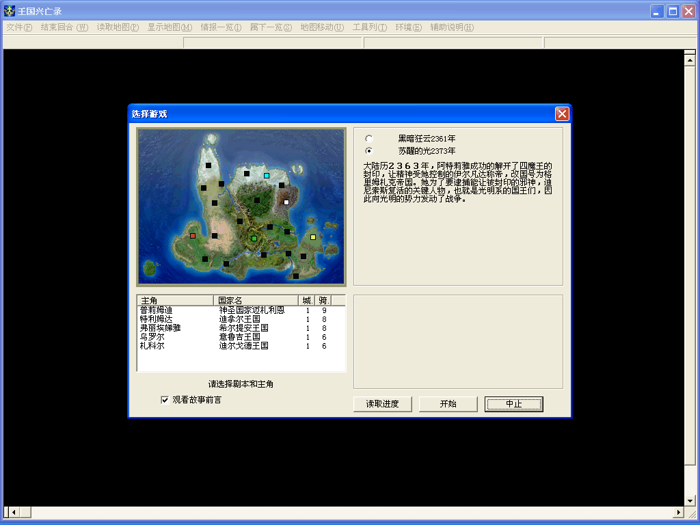

名稱：皇室血裔2／皇家血裔2／王國興亡錄 (Royal Blood 2，中文版) 簡介：KOEI 1999年出品的策略遊戲，2000年由第三波中文化並代理發行 [待補]。  備註：本版為簡中版，缺繁中版 保護：光碟，破解碼（放入光碟才有背景音樂）： koeicda.dll B8 FF FF FF FF 8B 4D 90 90 90 90 90 -- -- 備註：簡中版必須在簡中系統上執行，否則會亂碼。
